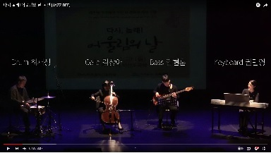
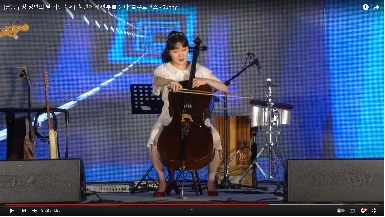
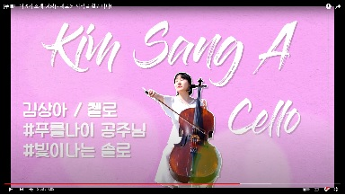
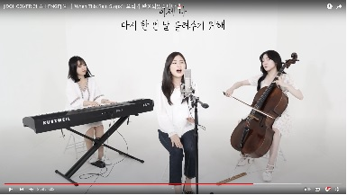
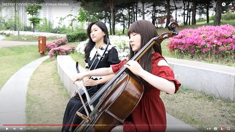

For UK Man
푸를나이 구독 취소했지만 상아를 보고싶은 우기를 위해 만듦
푸를나이 채널에만 있는 5기 영상
- 뜨거운 안녕
뜨거운 안녕
- '다시 놀래! 어울림의 날' 공연 Autumn leaves

Autumn Leaves
- [남동구청 청년의 날 기념축제] '청년에게 안부를 묻다' 블루로맨스 - Sunny

Sunny
- [푸를나이 5기 소개 영상] - 새로운 시작을 알립니다!

소개 영상
푸를나이 채널에만 있는 4기 영상
- [IDOL COVER CHALLENGE] 웬디 'When This Rain Stops' | 요리가 완성되었습니다👩🏻🍳

When this rain stops
- [WEEKLY COVER] The Sound of Music Medley

사운드 오브 뮤직